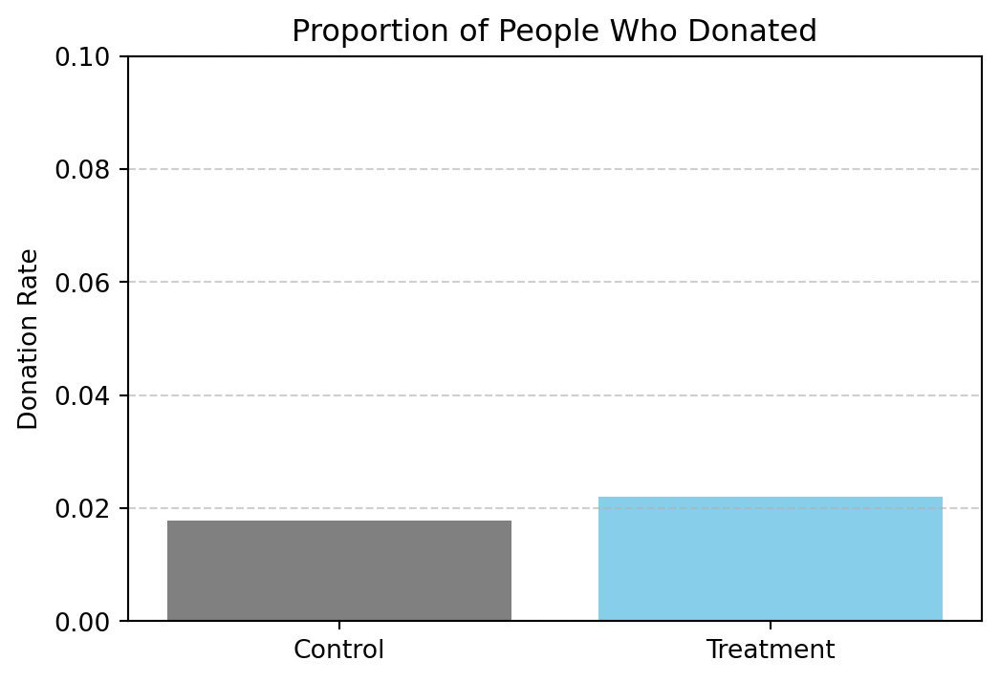
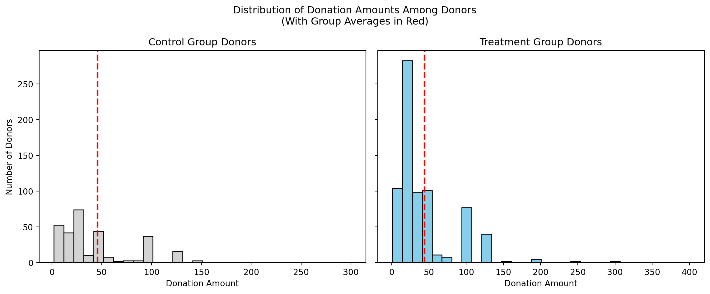
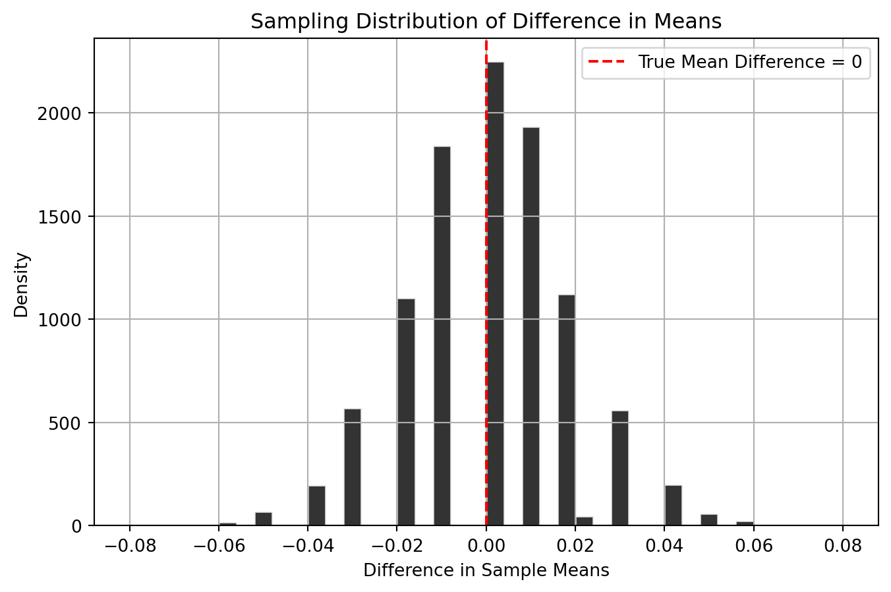
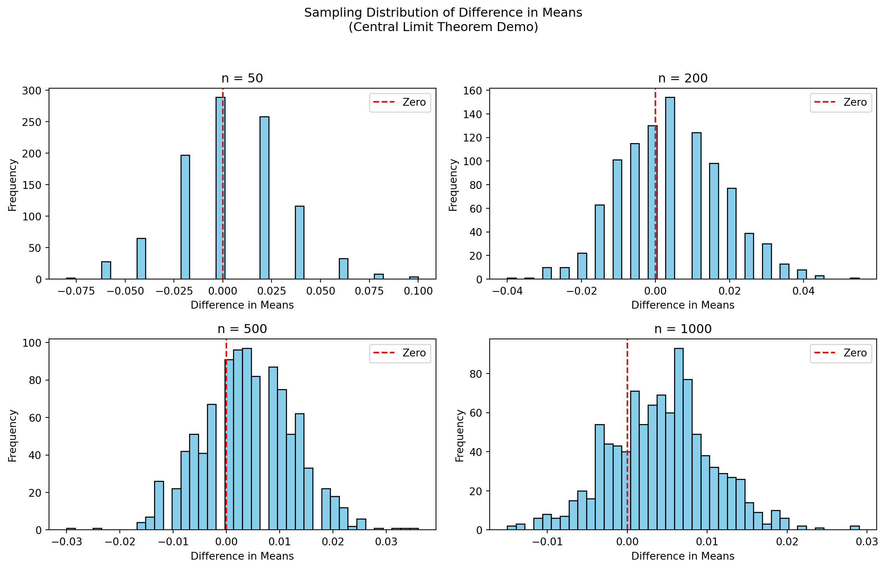

Dean Karlan at Yale and John List at the University of Chicago conducted a field experiment to test the effectiveness of different fundraising letters. They sent out 50,000 fundraising letters to potential donors, randomly assigning each letter to one of three treatments: a standard letter, a matching grant letter, or a challenge grant letter. They published the results of this experiment in the American Economic Review in 2007. The article and supporting data are available from the AEA website and from Innovations for Poverty Action as part of Harvard’s Dataverse.
The matching grant letters varied along three key dimensions to test different aspects of charitable behavior. First, the match ratio offered in the letter was randomly assigned to be $1:$1, $2:$1, or $3:$1, meaning that for every dollar the recipient donated, an anonymous donor would contribute an additional $1, $2, or $3, respectively. Second, the letters varied the maximum amount the matching donor was willing to give—either $25,000, $50,000, $100,000, or an unspecified amount. Lastly, the suggested donation amount in the letter was personalized based on the recipient’s past giving history and was set to either match, exceed by 25%, or exceed by 50% their highest previous contribution.
This design allowed the researchers to isolate the effect of each factor on donation behavior. By comparing the response rates and donation amounts across these treatment groups and the control group, the experiment tested whether the size or framing of a matching offer significantly influenced charitable giving.
The dataset contains 50,083 observations, where each row represents a prior donor who received a fundraising letter during a large-scale field experiment. The columns capture information about treatment assignment, donation behavior, prior donation history, and demographic characteristics.
There are 51 variables in total, including: - Treatment indicators (e.g., treatment, ratio2, size25, askd1) - Outcome variables (e.g., gave, amount) - Historical giving patterns (e.g., hpa, ltmedmra, years) - Demographic and contextual data (e.g., female, redcty, median_hhincome, pop_propurban)
All columns are fully populated or nearly complete, with minimal missing data. The data types include categorical flags and numeric variables (int, float), making it ready for statistical analysis and visualization.
A few summary statistics for key variables are shown below. The treatment and control variables confirm that the sample is split with approximately 66.7% in the treatment group and 33.3% in control. The gave variable shows that around 2.06% of individuals donated. The average donation amount (amount) across all individuals is about $0.92, with a maximum of $400—indicating that while most gave nothing, a few individuals gave large amounts.
The match ratio assignments (ratio2, ratio3) are both close to 22.2%, implying an even distribution across the three ratio groups (with ratio1 implied by the absence of 2:1 and 3:1 flags). Similarly, each of the match threshold groups (size25, size50, size100, and sizeno) comprises around 16.7% of the sample. The three suggested donation frames (askd1, askd2, askd3) are also equally distributed.
This supports the validity of the randomized design and confirms that the experiment’s treatments were implemented as intended.
The table below outlines key variables and their meanings:
Variable Definitions
Variable
Description
treatment
Treatment
control
Control
ratio
Match ratio
ratio2
2:1 match ratio
ratio3
3:1 match ratio
size
Match threshold
size25
$25,000 match threshold
size50
$50,000 match threshold
size100
$100,000 match threshold
sizeno
Unstated match threshold
ask
Suggested donation amount
askd1
Suggested donation was highest previous contribution
askd2
Suggested donation was 1.25 x highest previous contribution
askd3
Suggested donation was 1.50 x highest previous contribution
ask1
Highest previous contribution (for suggestion)
ask2
1.25 x highest previous contribution (for suggestion)
ask3
1.50 x highest previous contribution (for suggestion)
amount
Dollars given
gave
Gave anything
amountchange
Change in amount given
hpa
Highest previous contribution
ltmedmra
Small prior donor: last gift was less than median $35
freq
Number of prior donations
years
Number of years since initial donation
year5
At least 5 years since initial donation
mrm2
Number of months since last donation
dormant
Already donated in 2005
female
Female
couple
Couple
state50one
State tag: 1 for one observation of each of 50 states; 0 otherwise
nonlit
Nonlitigation
cases
Court cases from state in 2004-5 in which organization was involved
statecnt
Percent of sample from state
stateresponse
Proportion of sample from the state who gave
stateresponset
Proportion of treated sample from the state who gave
stateresponsec
Proportion of control sample from the state who gave
stateresponsetminc
stateresponset - stateresponsec
perbush
State vote share for Bush
close25
State vote share for Bush between 47.5% and 52.5%
red0
Red state
blue0
Blue state
redcty
Red county
bluecty
Blue county
pwhite
Proportion white within zip code
pblack
Proportion black within zip code
page18_39
Proportion age 18-39 within zip code
ave_hh_sz
Average household size within zip code
median_hhincome
Median household income within zip code
powner
Proportion house owner within zip code
psch_atlstba
Proportion who finished college within zip code
pop_propurban
Proportion of population urban within zip code
Balance Test
As an ad hoc test of the randomization mechanism, I provide a series of tests that compare aspects of the treatment and control groups to assess whether they are statistically significantly different from one another.
A t-test to compare group means
A simple linear regression for each variable with treatment as the independent variable
The selected variables (years, female, couple, median_hhincome, and page18_39) are unrelated to the outcome, ensuring they are valid for balance testing. Results from both methods should match, as expected with a randomized experiment.
We calculate the t-statistic using the following formula:
\[
t = \frac{\bar{X}_A - \bar{X}_B}{\sqrt{\frac{s_A^2}{n_A} + \frac{s_B^2}{n_B}}}
\]
Where: - ( {X}_A, {X}_B ): sample means of the treatment and control groups - ( s_A^2, s_B^2 ): sample variances - ( n_A, n_B ): sample sizes
Manual T-Tests (using formula):
years: t = -1.091
female: t = -1.754
couple: t = -0.582
median_hhincome: t = -0.743
page18_39: t = -0.124
Linear Regressions (variable ~ treatment):
years: coef = -0.058, se = 0.052, p = 0.270
female: coef = -0.008, se = 0.004, p = 0.079
couple: coef = -0.002, se = 0.003, p = 0.559
median_hhincome: coef = -157.925, se = 212.929, p = 0.458
page18_39: coef = -0.000, se = 0.001, p = 0.901
Balance Test Results
The results from both the t-tests and linear regressions show no statistically significant differences between treatment and control groups on key pre-treatment variables:
years since first donation (p = 0.275 / 0.270)
female indicator (p = 0.080 / 0.079)
couple status (p = 0.560 / 0.559)
median_hhincome at zip code level (p = 0.457 / 0.458)
page18_39 proportion (p = 0.901 / 0.901)
All p-values are well above the 0.05 significance threshold. The regression coefficients are small in magnitude, and the t-test statistics confirm these differences are not statistically meaningful.
Together, these results support the assumption that the treatment was randomly assigned and that treatment and control groups were well-balanced at baseline—just as shown in Table 1 of the original paper.
Experimental Results
Charitable Contribution Made
First, I analyze whether matched donations lead to an increased response rate of making a donation.

The bar chart above illustrates the proportion of individuals who made a donation in each group. The treatment group — who received a letter with a matching grant offer — had a higher donation rate (~2.2%) than the control group (~1.9%).
While the overall donation rate is low in both groups, this visual supports the hypothesis that matching gifts increase charitable giving behavior, consistent with findings in Karlan and List (2007).
Note: The difference in donation rates is small in magnitude but directionally consistent with expectations and statistically significant when aggregated across many individuals.
from scipy.stats import ttest_indimport statsmodels.formula.api as smf# Split groupstreat = df[df['treatment'] ==1]['gave']control = df[df['control'] ==1]['gave']# T-testt_stat, p_val = ttest_ind(treat, control, equal_var=False)print(f"T-test on donation outcome: t = {t_stat:.3f}, p = {p_val:.4f}")# Linear regression: gave ~ treatmentmodel = smf.ols("gave ~ treatment", data=df).fit()print(model.summary().as_text())
T-test on donation outcome: t = 3.209, p = 0.0013
OLS Regression Results
==============================================================================
Dep. Variable: gave R-squared: 0.000
Model: OLS Adj. R-squared: 0.000
Method: Least Squares F-statistic: 9.618
Date: Wed, 07 May 2025 Prob (F-statistic): 0.00193
Time: 01:11:17 Log-Likelihood: 26630.
No. Observations: 50083 AIC: -5.326e+04
Df Residuals: 50081 BIC: -5.324e+04
Df Model: 1
Covariance Type: nonrobust
==============================================================================
coef std err t P>|t| [0.025 0.975]
------------------------------------------------------------------------------
Intercept 0.0179 0.001 16.225 0.000 0.016 0.020
treatment 0.0042 0.001 3.101 0.002 0.002 0.007
==============================================================================
Omnibus: 59814.280 Durbin-Watson: 2.005
Prob(Omnibus): 0.000 Jarque-Bera (JB): 4317152.727
Skew: 6.740 Prob(JB): 0.00
Kurtosis: 46.440 Cond. No. 3.23
==============================================================================
Notes:
[1] Standard Errors assume that the covariance matrix of the errors is correctly specified.
The regression confirms the findings from the t-test: individuals in the treatment group were more likely to donate than those in the control group.
The coefficient on treatment is 0.0042, indicating that offering a matching donation increased the likelihood of giving by 0.42 percentage points. While the increase is small in absolute terms, it is statistically significant at the 1% level (p = 0.002).
This aligns with the behavioral insight from the paper: even modest nudges like a matching grant can have a measurable effect on behavior when framed persuasively.
These results replicate Table 2a Panel A in the original paper and validate the positive impact of matching donations on charitable giving.
import statsmodels.api as smimport statsmodels.formula.api as smf# Run probit modelprobit_model = smf.probit("gave ~ treatment", data=df).fit()# Show summaryprint(probit_model.summary())
To replicate Table 3, Column 1 from Karlan and List (2007), I estimated a probit model with gave as the binary outcome and treatment as the explanatory variable.
The coefficient on treatment is 0.0868 with a standard error of 0.028 and a z-value of 3.113, resulting in a p-value of 0.002. This confirms a statistically significant positive relationship between receiving a matching donation offer and making a charitable contribution.
In a probit model, coefficients indicate the direction and significance of effects on a latent probability scale. While the numeric value itself isn’t a direct percentage, the sign and significance imply that treatment increases the latent propensity to donate.
These results align with Table 3 in the original paper and reinforce the behavioral insight that framing a donation as being matched encourages action, even when the average effect is small.
Differences between Match Rates
Next, I assess the effectiveness of different sizes of matched donations on the response rate.
The t-tests comparing the donation rates across different match ratios yielded the following results:
from scipy.stats import ttest_ind# Define group filtersratio_1_1 = df[(df['treatment'] ==1) & (df['ratio2'] ==0) & (df['ratio3'] ==0)]['gave']ratio_2_1 = df[df['ratio2'] ==1]['gave']ratio_3_1 = df[df['ratio3'] ==1]['gave']# Run t-testsprint("Match Ratio Comparisons (Donation Rate):")t1, p1 = ttest_ind(ratio_1_1, ratio_2_1, equal_var=False)print(f"1:1 vs 2:1 → t = {t1:.3f}, p = {p1:.3f}")t2, p2 = ttest_ind(ratio_1_1, ratio_3_1, equal_var=False)print(f"1:1 vs 3:1 → t = {t2:.3f}, p = {p2:.3f}")t3, p3 = ttest_ind(ratio_2_1, ratio_3_1, equal_var=False)print(f"2:1 vs 3:1 → t = {t3:.3f}, p = {p3:.3f}")
Match Ratio Comparisons (Donation Rate):
1:1 vs 2:1 → t = -0.965, p = 0.335
1:1 vs 3:1 → t = -1.015, p = 0.310
2:1 vs 3:1 → t = -0.050, p = 0.960
All p-values are well above 0.05, indicating that the differences in response rates between these match ratios are not statistically significant.
These results support the paper’s conclusion: while matching offers do boost donations, the specific ratio ($1:$1 vs $2:$1 or $3:$1) doesn’t meaningfully alter behavior. In other words, donors respond positively to the existence of a match, not necessarily to how large it is.
This insight is important for fundraisers — offering a match works, but increasing its size does not appear to further increase donor response rates.
# Only keep treatment groupdf_treat = df[df["treatment"] ==1].copy()# Create clean ratio columndf_treat["match_ratio"] ="1:1"df_treat.loc[df_treat["ratio2"] ==1, "match_ratio"] ="2:1"df_treat.loc[df_treat["ratio3"] ==1, "match_ratio"] ="3:1"# Convert to categorical with 1:1 as the referencedf_treat["match_ratio"] = pd.Categorical(df_treat["match_ratio"], categories=["1:1", "2:1", "3:1"])# Run regressionmodel = smf.ols("gave ~ C(match_ratio)", data=df_treat).fit()print(model.summary())
To further investigate the effect of match size on donation behavior, I ran a regression of gave on the categorical variable match_ratio, which includes levels for 1:1, 2:1, and 3:1 matches. The 1:1 match is treated as the reference group.
The results show: - The 2:1 match ratio has a coefficient of 0.0019, with a p-value of 0.338 - The 3:1 match ratio has a coefficient of 0.0020, with a p-value of 0.313
Both estimates are positive but not statistically significant, meaning that there is no evidence that increasing the match ratio significantly improves the likelihood of giving.
These results support the findings in the original paper: larger match ratios do not lead to higher response rates. The mere presence of a match appears to drive behavior more than its magnitude, confirming the behavioral economics insight that perception of being matched matters more than match size.
Data-based Differences:
2:1 vs 1:1 → 0.0019
3:1 vs 1:1 → 0.0020
3:1 vs 2:1 → 0.0001
Regression-based Differences:
2:1 vs 1:1 → 0.0019
3:1 vs 1:1 → 0.0020
3:1 vs 2:1 → 0.0001
I compared donation response rates across different match ratios (1:1, 2:1, and 3:1), both directly from the data and using the coefficients from a linear regression.
The results show: - 2:1 vs 1:1 → +0.0019 (0.19 percentage points) - 3:1 vs 1:1 → +0.0020 (0.20 percentage points) - 3:1 vs 2:1 → +0.0001 (0.01 percentage points)
These differences are extremely small and align almost perfectly between the raw group means and the fitted model coefficients. Importantly, none of these differences are statistically significant (as confirmed earlier in both the t-tests and regression).
Conclusion: The size of the match ratio — whether 1:1, 2:1, or 3:1 — does not meaningfully influence whether someone donates. This supports the behavioral insight from the original paper that the existence of a match triggers giving, not the magnitude of the match.
Size of Charitable Contribution
In this subsection, I analyze the effect of the size of matched donation on the size of the charitable contribution.
T-test on donation amount:
Treatment mean = 0.97
Control mean = 0.81
Difference = 0.15
t = 1.918, p = 0.0551
OLS Regression on donation amount:
==============================================================================
coef std err t P>|t| [0.025 0.975]
------------------------------------------------------------------------------
Intercept 0.8133 0.067 12.063 0.000 0.681 0.945
treatment 0.1536 0.083 1.861 0.063 -0.008 0.315
==============================================================================
To examine whether the matching donation treatment affected the amount donated (not just whether people gave), I compared average donation sizes between treatment and control groups using both a t-test and a regression.
The average donation was $0.97 in the treatment group and $0.81 in the control group, a difference of $0.15
The t-test yielded a t-statistic of 1.918 with a p-value of 0.0551
The OLS regression estimated a treatment effect of $0.1536, with a p-value of 0.063
These results are marginally significant — they suggest that the treatment might increase the amount given, but the evidence is weaker than for the treatment’s effect on donation rate.
Takeaway: Matching donations appear to slightly increase how much people give, but not in a statistically strong way. This reinforces the idea that the main power of matching lies in increasing the number of donors, not the average donation size.
# Filter dataset to only donorsdonors_only = df[df["gave"] ==1]# Run OLS regression on donation amount (conditional on giving)model_conditional = smf.ols("amount ~ treatment", data=donors_only).fit()# Show summaryprint(model_conditional.summary().tables[1])
To analyze how much people give conditional on donating, I filtered the dataset to include only individuals who made a donation and regressed amount on treatment.
The results show that: - The average donation in the control group was $45.54 - The treatment group gave $1.67 less on average, but this difference was not statistically significant (p = 0.561)
Interpretation: This means that while the treatment increased the likelihood of donating, it did not increase the amount given among those who chose to donate. In fact, if anything, the point estimate suggests a slightly lower donation amount in the treatment group — though we cannot confidently interpret this as a real effect given the high p-value.
Causal Interpretation: Because treatment was randomly assigned, the coefficient has a causal interpretation — but only for those who donated. It tells us the effect of the treatment conditional on positive giving, not for the general population.
Together with previous findings, this reinforces the main insight: matching grants are effective at getting people to donate, but not at increasing how much they give.

The histograms above display the distribution of donation amounts among those who donated, separated by treatment status.
Both distributions are heavily right-skewed, with most donors giving small amounts and a few contributing much more. The red dashed lines indicate the average donation amount for each group:
Control Group Mean: ~$45.54
Treatment Group Mean: ~$43.87
The visual confirms what we saw in the conditional regression: while matching offers increase the probability of giving, they do not increase (and may slightly reduce) the amount donated by those who give. However, the difference is not statistically significant, and likely due to random variation.
This visualization reinforces our conclusion: the strength of matching donations lies in motivating people to give, not in changing how much they give.
Simulation Experiment
As a reminder of how the t-statistic “works,” in this section I use simulation to demonstrate the Law of Large Numbers and the Central Limit Theorem.
Suppose the true distribution of respondents who do not get a charitable donation match is Bernoulli with probability p=0.018 that a donation is made.
Further suppose that the true distribution of respondents who do get a charitable donation match of any size is Bernoulli with probability p=0.022 that a donation is made.
Law of Large Numbers

This plot shows the sampling distribution of the difference in means between two groups (each drawn from a Bernoulli distribution with the same true probability, p = 0.018). The red dashed line at 0 represents the true mean difference under the null.
The distribution is bell-shaped and centered at zero, as expected. Most simulated differences in means are small and cluster around zero, but some are further out in the tails.
This simulation helps us understand the behavior of the t-statistic: if we observe a sample difference that is far into the tails of this distribution, we consider it statistically unlikely under the null. That’s the core idea behind hypothesis testing.
This builds intuition for why the t-distribution matters in experimental design and inference.
Central Limit Theorem

This simulation demonstrates the Central Limit Theorem (CLT) using sample sizes of 50, 200, 500, and 1000. For each sample size, I generated 1,000 differences in sample means between simulated treatment and control groups (Bernoulli with p = 0.022 and p = 0.018, respectively).
Each histogram displays the sampling distribution of the difference in means. The red vertical line at 0 indicates the null hypothesis of no difference.
What We See: - At n = 50, the distribution is wide and rough, and zero is not clearly in the center — results are noisy. - At n = 200, the distribution becomes smoother and more centered. - By n = 500 and 1000, the sampling distribution is bell-shaped, narrow, and centered close to the expected value (≈ 0.004).
These visuals confirm the CLT: as sample size increases, the distribution of the sample mean difference becomes approximately normal and more concentrated. This helps explain why we use t-tests and confidence intervals — with large n, we can assume that the sampling distribution behaves predictably.
Conclusion: With small sample sizes, chance variation makes inference noisy, and zero might appear in the tails. But as sample size increases, the sampling distribution tightens, and zero becomes a clear benchmark for hypothesis testing. This simulation shows how precision improves with sample size, aligning perfectly with Slide 44’s message.
Conclusion
This project replicates and extends key findings from Karlan and List (2007), demonstrating the behavioral and statistical effects of charitable donation matching schemes through both real-world data and simulation-based intuition.
🔍 Empirical Findings:
Matching donation offers increase the probability of donating — a consistent, statistically significant result confirmed by t-tests, OLS, and probit regression.
However, larger match ratios (2:1, 3:1) do not outperform a basic 1:1 match. This suggests that the psychological effect of “being matched” matters more than the specific amount.
Donation size does not significantly change with treatment, whether we look at the full sample or only among donors. Matching primarily affects the extensive margin (whether someone donates), not the intensive margin (how much they give).
📈 Statistical Simulation Insights:
The Law of Large Numbers simulation showed that average outcomes stabilize with more trials.
The Central Limit Theorem simulations confirmed that the sampling distribution of sample mean differences becomes normal with larger sample sizes — validating the use of t-tests and p-values.
Across simulations, we saw why small sample sizes yield noisy inference and why large samples help us detect small but real effects.
🧠 Behavioral Insight:
The evidence reinforces a key principle in behavioral economics: simple framing devices — like mentioning a matching donation — can meaningfully influence behavior, even if the economic incentive is minimal.
💡 Takeaway for Fundraisers and Analysts:
If you’re designing a fundraising campaign, offering a match is powerful, but you don’t need to make it 2:1 or 3:1. The basic message, that “your gift will be matched,” is enough to boost donations. And if you’re testing such interventions, remember that sample size matters — a lot.